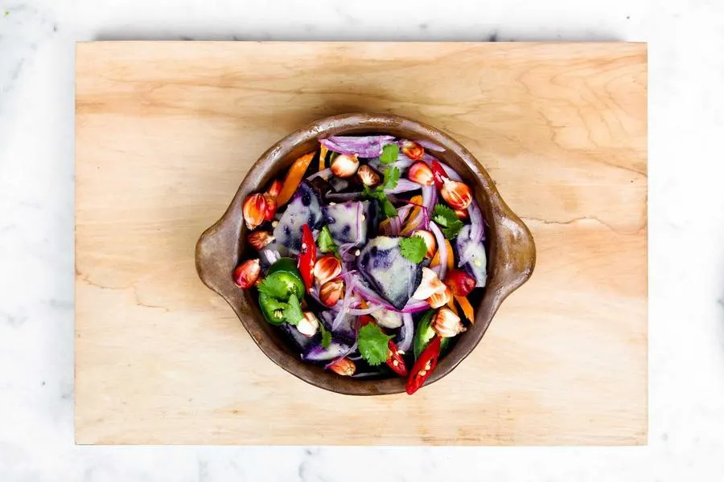
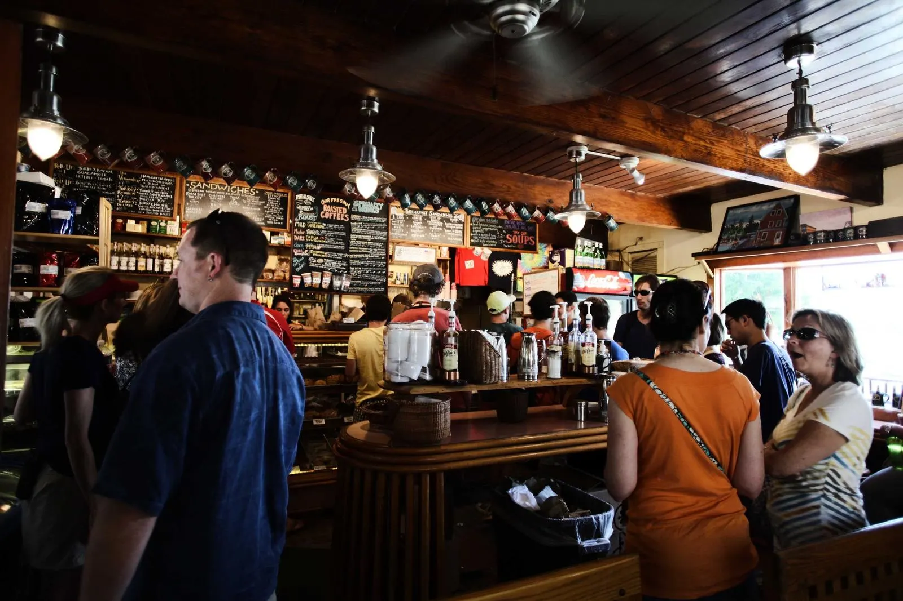
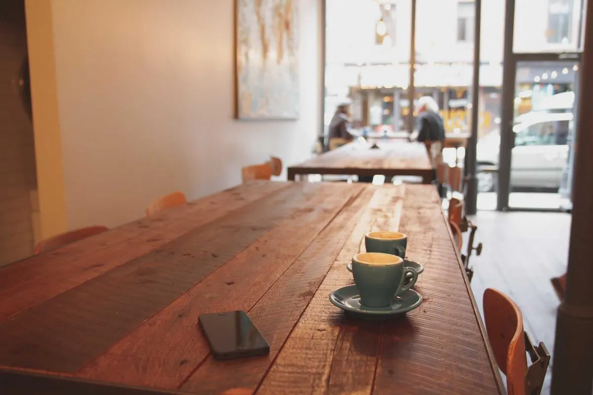
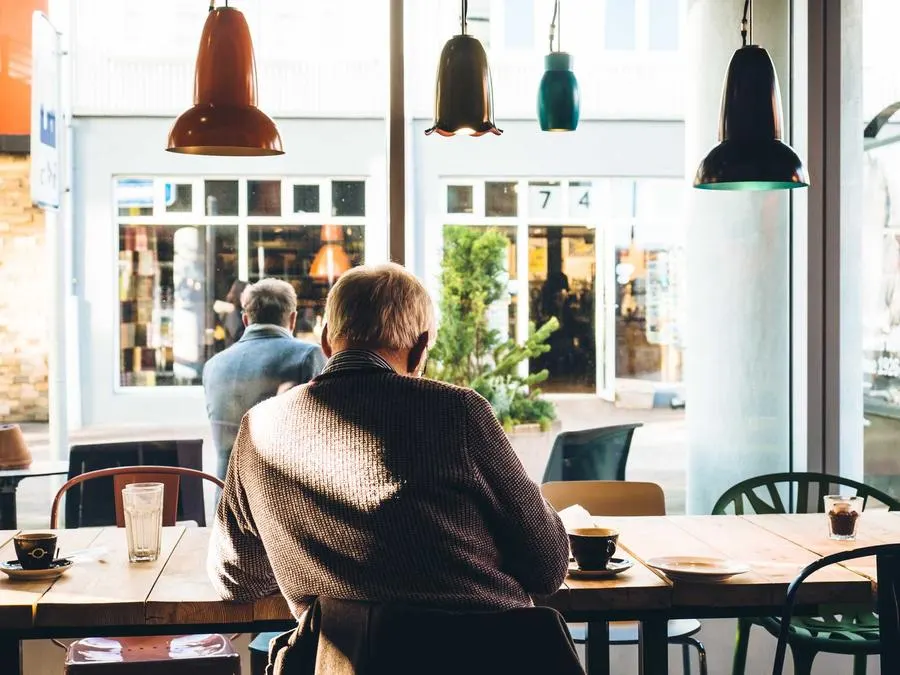

Burrata, charred peaches, basil oil£11
Sourdough from Leeds Bread Co-op on the side.
Wren & Barrel · Modern British
Wren & Barrel is a neighbourhood bistro in Chapel Allerton, Leeds: a short seasonal menu, natural wines and cocktails, open Tuesday to Sunday.

About
We opened in 2019 in an old ironmonger’s with forty seats, a long oak bar and a kitchen you can see into. The menu changes with what the farms around Leeds have that week, which is why it fits on one page.
Lunch is quick if you need it to be; dinner is not. Walk-ins are welcome at the bar, and the whole room can be booked for twenty-five or more.
The room


Reviews
The kind of place you want at the end of your street. We go on Sundays and never look at the menu until we sit down.
Booked the room for my mother’s seventieth. They made it feel like our own kitchen, only with better wine.
Best tagliatelle in Leeds, and I have tried them all.
FAQ
For dinner on Friday and Saturday, yes. Otherwise walk in; there are eight seats at the bar kept for walk-ins every service.
Yes. The menu marks what is vegan and gluten-free, and the kitchen will adapt most dishes. Tell us when you book or when you arrive.
For twenty-five to forty guests, any day. Send a request with the date and we reply with a menu and a price per head.
Well-behaved dogs are welcome at the bar and on the terrace.
14 Harrogate Road, Chapel Allerton, Leeds LS7 4PA · Tuesday to Thursday 12:00 to 22:00
Contact
Tell us when and how many; we confirm by phone or email within the day.